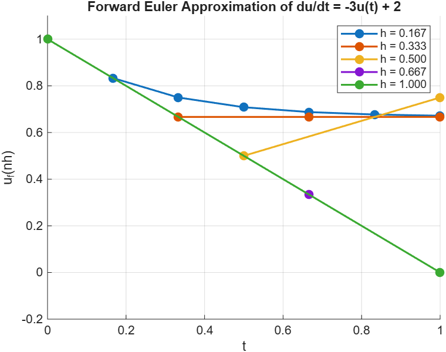
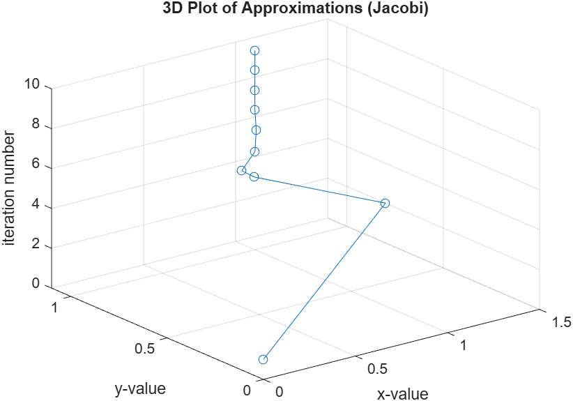
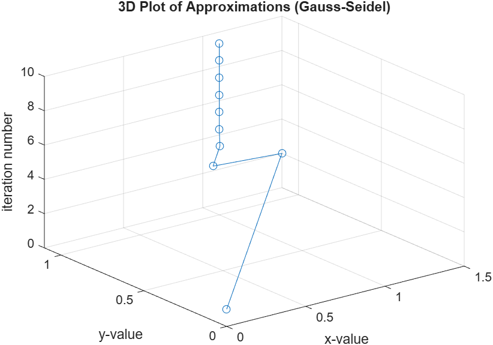
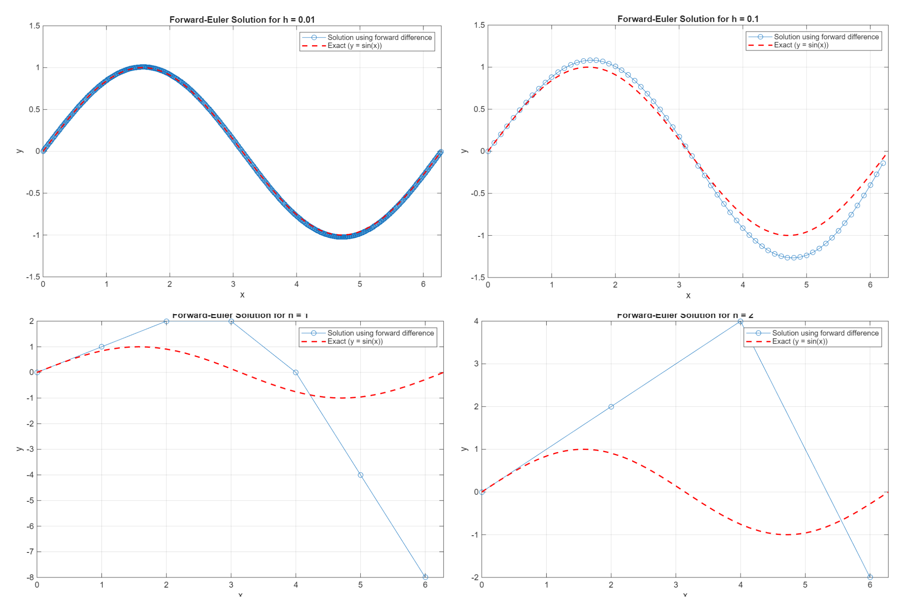
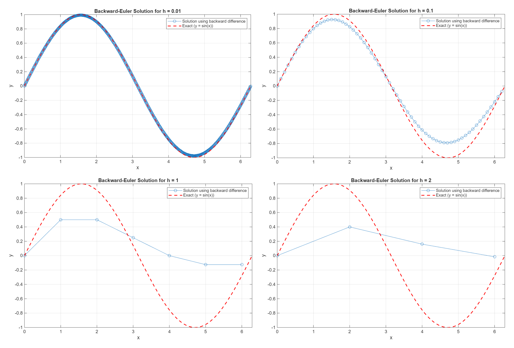
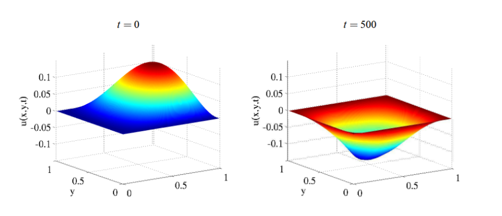
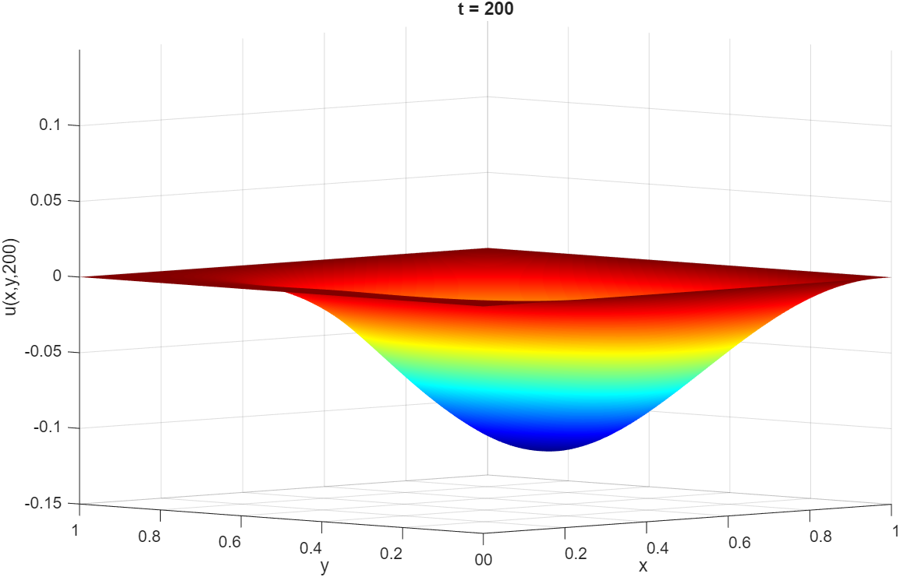
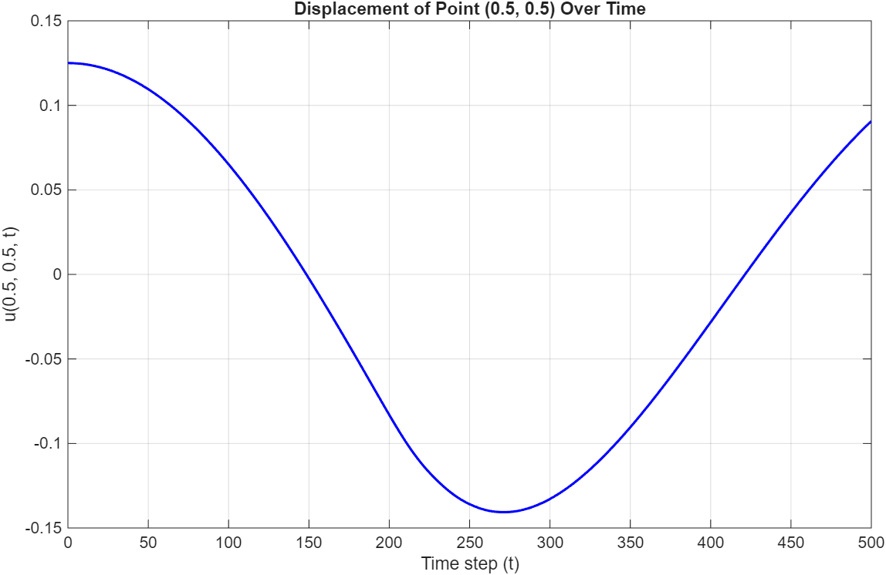

\[u_f(0) = 1\] \[u_f(nh + h) = (1 - 3h)u_f(nh) + 2h\]

The approximate solution starts to oscillate instead of decreasing monotonically for when \(h > 1/3\).
The approximate solution becomes unstable and blows up when \(h > 2/3\).
When \(h = 1/6\), the value of \((1 - 3h)\) is \(1/2\), which is positive and less than 1, so the approximate solution remains positive but decreases slowly towards the target (2/3). When \(h = 1/3\), \((1 - 3h)\) becomes 0, so the solution sits and remains at the target since the equation becomes \(u_f(h) = 2h\). When \(h = 1/2\), \((1 - 3h)\) becomes negative but between -1 and 0, so it begins to oscillate around the target and slowly moves toward the target. When \(h = 2/3\), \((1 - 3h)\) becomes equal to -1, so it oscillates around the target and remains at that same distance away from the target. Finally, when \(h = 1\), \((1 - 3h)\) is -2, so the solution becomes unstable since at each step, the solution strays further and further away from the target.
\(4x + 2y = 6\)
\(x - 5y = -4\)
Recurrence relation using Jacobi method:
\(x_{i+1} = (6 - 2y_i) / 4\)
\(y_{i+1} = (4 + x_i) / 5\)
Using matrices and vectors:
\(\begin{pmatrix}x_{i+1}\\y_{i+1}\end{pmatrix} =\begin{pmatrix}x_i\\y_i\end{pmatrix} -\begin{pmatrix}1/4 & 0\\0 & -1/5\end{pmatrix} \begin{pmatrix}4x + 2y - 6\\x - 5y + 4\end{pmatrix}\)
| \(i\) | 1 | 2 | 3 | 4 | 5 | 6 | 7 | 8 | 9 | 10 |
|---|---|---|---|---|---|---|---|---|---|---|
| \(x\) | 0 | 1.5000 | 1.1000 | 0.9500 | 0.9900 | 1.0050 | 1.0010 | 0.9995 | 0.9999 | 1.0000 |
| \(y\) | 0 | 0.8000 | 1.1000 | 1.0200 | 0.9900 | 0.9980 | 1.0010 | 1.0002 | 0.9999 | 1.0000 |

In the 3D plot using the Jacobi method, the points start off spiraling around and begin to narrow as the iteration number increases. It eventually centers around the vertical line \((1, 1, i)\), which is the solution to the linear system. The spiral effect occurs because the Jacobi method updates values based on the previous step’s error, so the approximations begin way off from the actual solution before slowly moving towards the solution, and this visualizes the reduction of the residual error after each iteration of the Jacobi method.
Recurrence relation using Gauss-Seidel method:
\(x_{i+1} = (6 - 2y_i) / 4\)
\(y_{i+1} = (4 + x_{i+1}) / 5\)
Using matrices and vectors:
\(\begin{pmatrix}x_{i+1}\\y_{i+1}\end{pmatrix} =\begin{pmatrix}x_i\\y_i\end{pmatrix} -\begin{pmatrix}4 & 0\\1 & -5\end{pmatrix}^{-1} \begin{pmatrix}4x + 2y - 6\\x - 5y + 4\end{pmatrix}\)
| \(i\) | 1 | 2 | 3 | 4 | 5 | 6 | 7 | 8 | 9 | 10 |
|---|---|---|---|---|---|---|---|---|---|---|
| \(x\) | 0 | 1.5000 | 0.9500 | 1.0050 | 0.9995 | 1.0000 | 1.0000 | 1.0000 | 1.0000 | 1.0000 |
| \(y\) | 0 | 1.1000 | 0.9900 | 1.0010 | 0.9999 | 1.0000 | 1.0000 | 1.0000 | 1.0000 | 1.0000 |

In the 3D plot using the Gauss-Seidel method, the points are quicker to approach the solution \((1, 1, i)\) compared to the Jacobi method. This is because the Gauss-Seidel method uses the new value of \(x\) immediately after calculating it in the equation to calculate \(y\). The points also eventually center at the actual solution, shown by the vertical line, but the path is more direct and faster than the spiral seen in the graph for the Jacobi method. As the iteration number increases, the horizontal distance between the points shrinks, and the points eventually converge to form the vertical line, which visualizes the reduction of the residual error.
\(\frac{d²y}{dx²} = -y\)
\(\frac{y_f(nh + 2h) - 2y_f(nh + h) + y_f(nh)}{h^2} = -y_f(nh)\)
\(y_f(nh + 2h) - 2y_f(nh + h) + y_f(nh) = -(h^2)y_f(nh)\)
\(y_f(nh + 2h) = -(h^2)y_f(nh) + 2y_f(nh + h) - y_f(nh)\)
\(y_f(nh + 2h) = 2y_f(nh + h) - (1 + h^2)y_f(nh)\)
So the difference equation is: \(y_f(nh + 2h) = 2y_f(nh + h) - (1 + h^2)y_f(nh)\).
\(y_f(0) = 0\)
\(\frac{y_f(h) - y_f(0)}{h} = y'(0) = 1\) → \(y_f(h) = y_f(0) + h = h\)
So,
\(y_f(2h) = 2y_f(h) - (1 + h^2)y_f(0) = 2(h) - (1 + h^2)(0) = 2h\)
\(y_f(3h) = 2y_f(2h) - (1 + h^2)y_f(h) = 2(2h) - (1 + h^2)(h) = 4h - (h + h^3) = 3h - h^3\)

With smaller step sizes, the solution using the forward difference is much closer to the exact solution, but as the step size grows, the gap between the solution and the exact solution becomes much wider. At \(h = 1.0\) and \(h = 2.0\), the solution becomes jagged and begins to drift away from the shape of the sine wave, and this is because the step sizes are too large to accurately depict the curvature of the sine wave.
Difference equation:
\(\frac{y_b(nh) - 2y_b(nh - h) + y_b(nh - 2h)}{h^2} = -y_b(nh)\)
\(y_b(nh) - 2y_b(nh - h) + y_b(nh - 2h) = -(h^2)y_b(nh)\)
\(y_b(nh) - 2y_b(nh - h) + y_b(nh - 2h) = -(h^2)y_b(nh)\)
\(y_b(nh) + (h^2)y_b(nh) = 2y_b(nh - h) - y_b(nh - 2h)\)
\((1 + h^2)y_b(nh) = 2y_b(nh - h) - y_b(nh - 2h)\)
So the difference equation is: \(y_b(nh) = \frac{2y_b(nh - h) - y_b(nh - 2h)}{1 + h^2}\)
First two terms in the solution to the difference equation:
\(\frac{y_b(0) - y_b(-h)}{h} = y'(0) = 1\) → \(y_b(-h) = y_b(0) - h = -h\)
\(y_b(0) = 0\)
So,
\(y_b(h) = \frac{2y_b(0) - y_b(-h)}{1 + h^2} = \frac{2(0) - (-h)}{1 + h^2} = \frac{h}{1 + h^2}\)
\(y_b(2h) = \frac{2y_b(h) - y_b(0)}{1 + h^2} = \frac{(2h)/(1+h^2) - 0}{1 + h^2} = \frac{2h}{(1 + h^2)^2}\)
Solutions to the difference equation graph:

With smaller step sizes, the solution using the backward difference equation stays much closer to the exact solution, but as the step size grows, the amplitude shrinks significantly compared to the exact solution. At \(h = 1.0\) and \(h = 2.0\), the solution becomes jagged and aggressively decays toward zero, drifting away from the true shape of the sine wave because the large step sizes and the \((1 + h^2)\) divisor cause the method to fail to accurately depict the curvature. However, in comparison to using the forward difference equation, the backward difference is a lot more stable for larger step sizes mainly because of the divisor, which effectively shrinks the solution and prevents it from growing out of control as step size grows.
\(\frac{∂^2u}{∂x^2} = \frac{\frac{u(nh+h,mh)-u(nh,mh)}{h} - \frac{u(nh,mh)-u(nh-h,mh)}{h}}{h}\)
\(\frac{∂^2u}{∂y^2} = \frac{\frac{u(nh,mh+h)-u(nh,mh)}{h} - \frac{u(nh,mh)-u(nh,mh-h)}{h}}{h}\)
\(\frac{\frac{u(nh+h,mh)-u(nh,mh)}{h} - \frac{u(nh,mh)-u(nh-h,mh)}{h}}{h} + \frac{\frac{u(nh,mh+h)-u(nh,mh)}{h} - \frac{u(nh,mh)-u(nh,mh-h)}{h}}{h} = 0\)
\(u(nh+h,mh) + u(nh-h,mh) + u(nh,mh+h) + u(nh,mh-h) - 4u(nh,mh) = 0\)
n = 5; % Number of interior points per row/column
N = n^2; % Total interior points
A = zeros(N, N);
b = zeros(N, 1);
% Boundary temperatures
T_top = 100; T_bottom = 300; T_left = 50; T_right = 200;
for j = 1:n
for i = 1:n
row = (j-1)*n + i;
A(row, row) = -4;
% Left neighbor (i-1)
if i > 1
A(row, row-1) = 1;
else
b(row) = b(row) - T_left;
end
% Right neighbor (i+1)
if i < n
A(row, row+1) = 1;
else
b(row) = b(row) - T_right;
end
% Bottom neighbor (j-1)
if j > 1
A(row, row-n) = 1;
else
b(row) = b(row) - T_bottom;
end
% Top neighbor (j+1)
if j < n
A(row, row+n) = 1;
else
b(row) = b(row) - T_top;
end
end
end
% Solve the linear system
u_interior = A \ b;
results = reshape(u_interior, n, n)';
results = flipud(results);
disp(results);Output:
85.9596 105.5959 118.9996 131.6565 151.5657
88.2425 117.4242 138.7461 156.0606 174.6062
99.5862 137.1125 162.5000 179.2337 190.7984
122.9900 168.9394 194.9077 207.5758 209.3536
173.4343 220.7474 240.6158 246.8080 239.0404Temperature values at the 4 original grid points:

Figure 1: Vibrating membrane at t = 0 and at t = 500
\(\frac{δ²u}{δt²} = \frac{δ²u}{δx²} + \frac{δ²u}{δy²}\)
\(\frac{u(x,y,t+Δt)-2u(x,y,t)+u(x,y,t-Δt)}{Δt^2} = \frac{u(x+Δx,y,t)-2u(x,y,t)+u(x-Δx,y,t)}{Δx^2} + \frac{u(x,y+Δy,t)-2u(x,y,t)+u(x,y-Δy,t)}{Δy^2}\)
\(u(x,y,t+Δt)-2u(x,y,t)+u(x,y,t-Δt) = \frac{Δt^2}{Δx^2}(u(x+Δx,y,t)-2u(x,y,t)+u(x-Δx,y,t)) + \frac{Δt^2}{Δy^2}(u(x,y+Δy,t)-2u(x,y,t)+u(x,y-Δy,t))\)
So the difference equation is:
\(u(x,y,t+Δt) = 2u(x,y,t) - u(x,y,t-Δt) + \frac{Δt^2}{Δx^2}(u(x+Δx,y,t)-2u(x,y,t)+u(x-Δx,y,t)) + \frac{Δt^2}{Δy^2}(u(x,y+Δy,t)-2u(x,y,t)+u(x,y-Δy,t))\)
To discretize the initial conditions, we first evaluate the displacement at \(t=0\), \(u(x,y,0) = 4x²y(1-x)(1-y)\). To find the value of \(u(x,y,−∆t)\), we use the centered difference approximation for the initial velocity. Since the membrane is at rest at \(t=0\):
\(\frac{u(x,y,Δt)-u(x,y,-Δt)}{2Δt} = u'(x,y,0)\)
\(u(x,y,-Δt) = u(x,y,Δt)-(2Δt)u'(x,y,0)\)
\(u(x,y,-Δt) = u(x,y,Δt)\)
So, by substituting this back into the difference equation at \(t=0\), we can eliminate the \(u(x,y,-Δt)\) term:
\(u(x,y,Δt) = 2u(x,y,0) - u(x,y,Δt) + \frac{Δt^2}{Δx^2}(u(x+Δx,y,0)-2u(x,y,0)+u(x-Δx,y,0)) + \frac{Δt^2}{Δy^2}(u(x,y+Δy,0)-2u(x,y,0)+u(x,y-Δy,0))\)
\(2u(x,y,Δt) = 2u(x,y,0) + \frac{Δt^2}{Δx^2}(u(x+Δx,y,0)-2u(x,y,0)+u(x-Δx,y,0)) + \frac{Δt^2}{Δy^2}(u(x,y+Δy,0)-2u(x,y,0)+u(x,y-Δy,0))\)
\(u(x,y,Δt) = u(x,y,0) + \frac{Δt^2}{2Δx^2}(u(x+Δx,y,0)-2u(x,y,0)+u(x-Δx,y,0)) + \frac{Δt^2}{2Δy^2}(u(x,y+Δy,0)-2u(x,y,0)+u(x,y-Δy,0))\)
This gives us the equation for the first time step, and once this value is computed, we can use the difference equation to compute values at later times.


% Parameters
dx = 0.01;
dy = 0.01;
dt = 0.0025;
steps = 500;
rx2 = (dt / dx)^2;
ry2 = (dt / dy)^2;
% Grid setup
x = 0:dx:1;
y = 0:dy:1;
[X, Y] = meshgrid(x, y);
nx = length(x);
ny = length(y);
% Initial conditions
u0 = 4 .* (X.^2) .* Y .* (1 - X) .* (1 - Y);
u1 = zeros(ny, nx);
% Track the center displacement
mid_idx = 51;
center_displacement = zeros(1, steps + 1);
center_displacement(1) = u0(mid_idx, mid_idx);
% First time step
for i = 2:ny-1
for j = 2:nx-1
u_x = rx2 * (u0(i, j+1) - 2*u0(i, j) + u0(i, j-1));
u_y = ry2 * (u0(i+1, j) - 2*u0(i, j) + u0(i-1, j));
u1(i, j) = u0(i, j) + 0.5 * (u_x + u_y);
end
end
center_displacement(2) = u1(mid_idx, mid_idx);
% Initialize previous and current states
u_prev = u0;
u_curr = u1;
u_next = zeros(ny, nx);
u_200 = zeros(ny, nx);
% Remaining values for u
for n = 2:steps
for i = 2:ny-1
for j = 2:nx-1
u_x = rx2 * (u_curr(i, j+1) - 2*u_curr(i, j) + u_curr(i, j-1));
u_y = ry2 * (u_curr(i+1, j) - 2*u_curr(i, j) + u_curr(i-1, j));
u_next(i, j) = 2*u_curr(i, j) - u_prev(i, j) + u_x + u_y;
end
end
% Save the state at t=200 for plotting
if n == 200
u_200 = u_next;
end
center_displacement(n + 1) = u_next(mid_idx, mid_idx);
% Shift arrays forward for the next time step
u_prev = u_curr;
u_curr = u_next;
end
% Plot for t = 200 (5c)
figure('Name', 'Displacement at t = 200');
surf(X, Y, u_200);
shading interp;
colormap jet;
title('t = 200');
xlabel('x');
ylabel('y');
zlabel('u(x,y,200)');
zlim([-0.15 0.15]);
view([-37.5, 30]);
% Plot for center displacement over time (5d)
figure('Name', 'Center Displacement Over Time');
plot(0:steps, center_displacement, 'b-', 'LineWidth', 1.5);
title('Displacement of Point (0.5, 0.5) Over Time');
xlabel('Time step (t)');
ylabel('u(0.5, 0.5, t)');
grid on;A commutative function is one where the order of inputs does not change the result of the function, and an associative function is one where the grouping of the inputs does not change the result of the function.
An example of a commutative function that is not associative would be \(f(a,b) = \frac{a + b}{2}\) since \(\frac{a + b}{2} = \frac{b + a}{2}\), but this isn’t true if we have \(f(f(a,b),c) = \frac{\frac{a+b}{2}+c}{2}\) and \(f(a,f(b,c)) = \frac{a+\frac{b+c}{2}}{2}\)
An example of an associative function that is not commutative would be \(f(a,b) = a - b\) since \(f(f(a,b),c) = (a - b) - c\) yields the same results as \(f(a,f(b,c)) = a - (b - c)\), but if we switch the order of the inputs, it becomes \(a - b \neq b - a\).
A problem is a task that is solved, defining what the input should be and what the desired output should be. An algorithm is the step-by-step procedure that takes a valid input and produces the desired output, and it is used as a method to solve a problem. SSSP is a problem because it defines the input as a graph with edge weights and a source node, and using that, we need to find the shortest-path distance from the source node to every other node. Two algorithms that can be used to solve the SSSP problem would be Dijkstra’s Algorithm, which is \(O(|E|*log(|V|))\), and the Bellman-Ford Algorithm, which is \(O(|E|*|V|)\). In a parallel implementation, the delta-stepping algorithm would be the best because it uses sets to group vertices with similar distances. This way, all nodes in set \(n\) are completed in parallel before moving onto set \(n+1\).
The average diameter of a very large power-law graph with billions of vertices may be as small as 5-10 because a small amount of nodes may be connected to a very large number of other nodes, which causes the number of hops it takes to get from one node to other to be quite small. Stanley Milgram was an American psychologist who conducted the small-world experiment, where he sent several packages to people living in Nebraska and asked them to forward the package to someone who they believed would bring the package closer to a final individual. He concluded that the chains had a median of about 5 intermediate acquaintances, leading to the idea of “six degrees of separation.” This is connected to power-law graphs and social networks because it explored the number of edges it takes to get from one node to another in a extremely large graph. Social networks are an example of this, like Facebook, where the nodes represent each user and the edges represent whether two users are friends or not. In this case, the idea of Milgram’s “six degrees of separation” would refer to the number of people between you and someone who’s famous.
The Barnes-Hut Algorithm rebuilds the spatial decomposition tree from scratch because incrementally updating it between time steps does not really improve the algorithm’s efficiency, which can be explained by Amdahl’s Law. Amdahl’s Law states that the overall speedup of a program is limited by the fraction of execution time spent in parts that cannot be improved, and this is relevant to Barnes-Hut because in the algorithm, rebuilding the tree is not the dominant portion of the total runtime. Instead, most of the computational time is spent traversing the tree and computing forces. Because of this, updating the tree between time steps would only optimize the time spent rebuilding the tree, leading to little performance gain. As a result, the added complexity of incrementally updating the tree wouldn’t have an advantage since rebuilding it each time step is simple and already efficient relative to the time spent during force computations.
Direct methods solve linear systems by perfoming a sequence of algebraic operations that produces an exact solution in a finite, predictable number of steps. They typically involve transforming the original system into a simpler form where the variables can be solved for easily. Two examples of direct methods are Cholesky (\(A = LL^T\)) and LU (\(A = LU\)). Direct methods aren’t used very often for solving sparse linear systems because \(L\) and \(U\) can still be quite dense even if \(A\) is sparse. During factorization, zero values in \(A\) can become non-zero in \(L\) or \(U\), which increases memory usage and computation time.